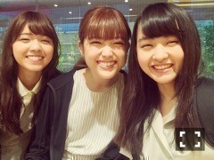
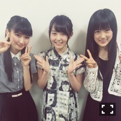

| 2015/07 13 Mon | 帯の裏の襟。653回目 |
映画『悲しみの忘れ方 Documentary of 乃木坂46』
大阪と京都で舞台挨拶、
TOHOシネマズ 梅田と
TOHOシネマズ 二条に
おじゃましました。
来てくださったみなさん
ありがとうございました。
普通の女の子が
乃木坂46に入るまでの変化。
乃木坂46の始まりから今までの、
まだ4年も経たない歴史と変化。
今まで知らなかったこと、
いろんな発見があるはず。
乃木坂46に詳しくない方にも
ぜひ観てほしい作品です。
同時に、変われる
という希望を持ってほしいです。！
オーディションの合格発表の
みんなの表情と、
主題歌に乗せた映像は必見(^.^)
本当に映像が綺麗です。
ドキュメンタリーも
ドラマ 初森ベマーズも始まり、
ツアーももうすぐ。
今年の夏も乃木充だあ！
終了後、京都の鴨川で黄昏れ、
美味しいすきやきをいただきました。

すぅ〜きぃ〜やき！ふぅ！
京都を堪能して満足気な3人
のんびりしてたなあ笑
昨日の乃木坂46SHOW!
見ましたか？
舞台じょしらくの密着、
曲は太陽ノックと他の星からを
披露しました*\(^o^)/*
他の星からは自分にとって
初めてのユニットで、
アルバムに収録されるcwでは
1位を獲得した曲なのです。
思い入れが強いです。
フルで披露できてよかった！
2コーラス目で
斜め一列になるところすき。
12th特典映像の予告編
公開されました！
山岸聖太監督
伊藤万理華×桜井玲香
「夏のせい。」
山岸監督のつくる作品は
色彩が鮮やかでテンポが良くて、
何度も見たくなります。
撮影はあっという間に終わりました、
もっと長く撮影していたかった
予告でもわかると思いますが
非常に口が悪い。
生徒との、学級委員との距離感、
この子にすごく共感しました。
このPVはType-Cに収録されます。

【第二章】學蘭歌劇『帝一の國』
初日のさゆを
ひなちまと一緒に観劇しました。
前回観に行ってなかったのですが、
とても楽しめました！
さゆの美美子本当に素敵だった。
勉強になります。
命は美しい踊ってたの気づいた〜笑
地方の公演もあって
忙しくなると思うけど、
最後まで応援してます！

去年の握手会。
今年も浴衣〜*\(^o^)/*
急に暑くなってきましたが、
夏バテしないようがんばろーう！
まりか
コメント(523)
2015/07/13 00:00